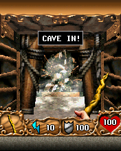

I saw somebody on an unrelated Reddit post say they’d been waiting for an Orcs & Elves port. That was enough of a reason for me to try. This recovery is Orcs & Elves II, and before we reached its dungeon, we had an argument with the investigator we were using to help us.OE00
Thirty minutes. 191 milliseconds.
The selected investigation budget was half an hour. The report recorded 191 milliseconds across three saved sessions, no matching runtime adapter and zero runtime tests. It had staged the package and identified BREW, then stopped when its supported experiments were exhausted.OE01OE02
My objection was that failing to execute the game didn’t mean we were done looking at it. We already had a native module, resources, a manifest and configuration. We could still inspect architecture, interfaces and assets while we worked toward a runtime.OE02
That report and a separate early runtime frontier describe different things. The bridge notes also preserve an attempt that stopped after 284 ARM instructions with no rendered frame. Neither was a playable game, but one had never tried runtime execution at all.OE02OE03
The original dungeon.

An unchanged 176×220 original-runtime frame retained in the 0.1.0 checkpoint. The CAVE IN message, dungeon and creatures are historical desktop host output.
Open the image for the full original view.
OE90We later used the Wolfenstein execution base and Doom’s original-input/audio integration to reach intro, title, New Game, difficulty, story and the moving first-person world. The files that first investigation had only staged were now producing a dungeon.OE03
The retained smoke evidence goes past 450 timer callbacks and includes eight audio events matched to decoded original assets. Guest-generated saves and configuration survive a fresh runtime session. One early service response still had provisional semantics; reaching the scene did not make every interface fully understood.OE03
Whose controls?
The game’s own help defined the controls. Up and down move, left and right turn, 5 or OK attacks, talks or interacts. Strafe, weapon cycling, waiting a turn and opening the map each have their own original numeric keys. The visual reference from Resident Evil: Genesis did not supply this game’s input meanings.OE04
The later pad retained independent contacts and the distinct arrow and numeric codes. Accepting two keys together meant forwarding those real events; it did not turn a turn-based dungeon crawler into a game with invented forty-five-degree movement.OE05OE06
What stuck with me started before the dungeon. We still had something worth investigating when the tool ran out of supported experiments. The original-world frame is a good reminder of what was still in those files after the first report stopped.OE02OE03
About these records
The Reddit motivation is current owner recollection; the original post and its author have not been identified. Exact source inspection resolves this bridge as Orcs & Elves II. The 191ms intake with zero runtime tests is distinct from the separately documented 284-instruction execution frontier. The 0.1.1 archive was truncated near its SDK tail; the initial recovery history and displayed image were read from the intact 0.1.0 archive, while selected later documents were recovered with size/CRC verification. Host tests do not supply a phone verdict for that later APK.
The receipts
Selected report lines, investigation notes and owner recollections. Open a receipt for its source and scope.
OE00 / A Reddit stranger waiting for a portOwner recollection
Source: Archive-building conversation / owner-supplied recollection
The located bridge is Orcs & Elves II. The original Reddit post has not been located, so no exact third-party quote, identity, date or response is claimed.
orcs and elves is cause i saw some dude on reddit on a unrelated post say how hed been waiting for a port lol
OE01 / A30-minute budget stops after191millisecondsCheckpoint investigation notes
Source: Orcs_Elves_2_Omni_findings_aa675bdc.md · selected lines 7–15, 21–25, 46–49
Original automated-investigation export. Its zero runtime tests are distinct from the separately documented early 284-instruction execution frontier.
Status: blocked Reason: Local experiments finished. Findings identify the missing content or execution capability. Runtime adapter: No matching runtime adapter Time spent: 191 ms across 3 saved sessions. Latest chosen overall investigation budget: 1800 seconds. Omni stops early when its supported experiments are finished. This report records source/package checks and measured runtime experiments. Original input bytes are preserved. Selected portable runtime source may be compiled on desktop; supplied build scripts are not invoked. Imported runtime code executes in a separate host worker. Runtime results retain their exact tested input and tool identities. [... selected excerpt ...] ## Observed successes - Stage a bounded experimental copy: Staged 4 files and 2426033 bytes; 0 nested archive(s) left packed at the stated depth/count/size limit. No guest scripts or native binaries were executed. Staged files remain in the private job workspace. Confirmed raw console inputs are read from preserved input.bin without a second whole-disc copy. - Consult existing bridge discoveries: ## Related prior work No supported catalog match for this input. The catalog is a recovered subset, not a complete inventory of available bridge work. - Inspect available source behavior: Static source observations only. No issue is confirmed by a text pattern. Read 0 source files / 0 bytes; 0 candidate signals. [... selected excerpt ...] ## Remaining limits and next steps - A checkpoint can supply its own runtime. Runtime/source and original assets must stay within the same project lineage. - Recognition is separate from runtime compatibility; a filename cannot establish that a game can run.
OE02 / The owner asks for inspection before a runtime existsCheckpoint investigation notes
Source: Omni_Orcs_Elves_II_Raw_Inspection_Handoff.txt · selected lines 4–5, 7–24, 26–36
USER'S WORDS "Tell me what Omni misunderstood about this? Being able to read raw files is kind of a must. Otherwise I'm forced to have initial inspection happen with an AI. Which defeats the purpose. Dont give me a 14 page dissertation. Make it information I can digest" [... selected excerpt ...] WHAT WAS TESTED - Input: Orcs-Elves-II_BREW_EN_Electronic-Arts-7041.zip - Omni job status: NEEDS CONTENT OR A TOOL / blocked - Investigation budget selected: 30 minutes - Reported work: 191 milliseconds across three saved sessions; zero runtime tests - Omni successfully staged four files (2,426,033 bytes) and recognized the BREW package. - Identified game contents: - orcsandelves2.mod — BREW game module, 292,116 bytes - orcsandelves2.bar — BREW resources, 2,130,702 bytes - orcsandelves2.mif — BREW manifest, 3,195 bytes - orcsandelves2.cfg — configuration file - The report found no matching runtime adapter, usable supplied runtime source, or relevant catalog match. It read zero source files and stopped without a deeper raw-binary/resource investigation. THE MISUNDERSTANDING Omni appears to treat the absence of an executable runtime as the end of useful local investigation. But being unable to EXECUTE an original game is not the same as being unable to INSPECT its original files. WHY IT MATTERS The user wants Omni to investigate unfamiliar games independently, before an AI-led bridge project already exists. If another AI must first examine every new game and explain its internals, Omni is dependent on the very external initial inspection it was intended to reduce. [... selected excerpt ...] WHAT THE EXISTING FILES COULD INFORM Even without gameplay execution, raw inspection could look for: - Module format, CPU architecture, entry points, and import/interface clues in the .mod - Resource directory and recognizable graphics/audio/data in the .bar - App identity, runtime requirements, or other metadata in the .mif and .cfg - Uncertainty, gaps, and findings worth retaining for later execution work These are investigation opportunities, not claims that any particular decoder or parser is already present or that these bytes are necessarily straightforward to interpret. CORE DISTINCTION TO CARRY FORWARD Intake and identification already worked. The missing capability is meaningful, evidence-producing RAW FILE INVESTIGATION that can continue when there is no matching runtime. Runtime discovery should unlock further experiments, not decide whether investigation itself can begin.
OE03 / From an early284-instruction stop to the original worldCheckpoint investigation notes
Source: Orcs_Elves_II_Bridge_v0.1.0_PRIVATE_CHECKPOINT.zip / Orcs_Elves_II_Bridge_v0.1.0_PRIVATE/README_FIRST.txt · selected lines 19–37, 48–54
WHAT WAS ACTUALLY VERIFIED - Original unchanged 2007 Electronic Arts BREW ARM module launched on a desktop Java host. - Original native game ran intro, title menus, New Game, difficulty, story, and rendered a moving first-person 3D opening scene using original assets. - More than 450 original timer callbacks and 17 native SELECT interactions with no guest runtime failure in a representative host smoke test. - 115 original BREW CMID/QCELP sound assets decoded into playback-ready WAV. Eight sampled original playback events matched these exact assets. - Original guest-generated sd_ save slots and config survived a new runtime session. - Compiled APK: Android 8.0+ (API 26), original 176x220 game display, private game saves, on-device runtime, report capture, original game input. - APK compiled and cryptographically signed (APK signature schemes v2/v3). STILL TO BE TESTED ON A PHYSICAL PHONE - Real Android app launch, touch/control feel, frame pacing/heat, sound playback, save persistence across full Android application restart, combat and later levels. - One early startup BREW service call remains a provisional compatibility response, empirically sufficient for the host launch; full service semantics are unconfirmed. This is the first playable CANDIDATE, not a verified end-to-end completed game. [... selected excerpt ...] PROJECT LINEAGE Adapted BREW/ARM execution base from the Wolfenstein RPG bridge and Doom RPG's original-input/audio Android integration. REGenesis v0.6.1 is the UI/report philosophy reference, not the source of Orcs & Elves II controls. Omni Devourer initial frontier: interface 0x0100102E, method offset 0x20, 284 ARM instructions and no rendered frame. This build advances through original menu/story and 3D startup in host execution.
OE90 / Historical image / Orcs and Elves II original CAVE IN sceneHistorical host capture
Source: Orcs_Elves_II_Bridge_v0.1.0_PRIVATE/evidence/host_original_3d_scene.png
Reviewed original game image; no personal interface or image metadata. This is a retained desktop original-runtime capture, not a new phone screenshot.
Unchanged historical game framebuffer. Source member: Orcs_Elves_II_Bridge_v0.1.0_PRIVATE/evidence/host_original_3d_scene.png Image SHA-256: d1fea91aa2bb9c9cb1833b892f5430d6887c3d0afbde31149325696113c8d02a An unchanged 176×220 original-runtime frame retained in the 0.1.0 checkpoint. The CAVE IN message, dungeon and creatures are historical desktop host output.
OE04 / Controls came from this game’s own helpCheckpoint investigation notes
Source: Orcs_Elves_II_Bridge_v0.1.0_PRIVATE_CHECKPOINT.zip / Orcs_Elves_II_Bridge_v0.1.0_PRIVATE/README_FIRST.txt · selected lines 9–17
CONTROLS — GROUNDED IN THE ORIGINAL GAME'S HELP TEXT Original D-pad: Up/Down move forward/back, Left/Right turn. 5 / OK: attack, talk, interact. 1 / 3: strafe left / right. 7 / *: next / previous weapon. 9: pass turn. #: map. 0: game menu / back. CLR: previous screen. The KEY PAD button reveals all 12 original numeric keys; nothing is remapped inside the actual game. The Android presentation follows the REGenesis phone-style layout while preserving Orcs & Elves II's different native controls.
OE05 / The later shell keeps the native direction and action codesCheckpoint investigation notes
Source: Orcs_Elves_II_Bridge_v0.1.1_PRIVATE_CHECKPOINT.zip / Orcs_Elves_II_Bridge_v0.1.1_PRIVATE/README_FIRST.txt · selected lines 31–43, 46–69
ORIGINAL CONTROLS D-pad up/down: forward/back. Left/right: turn. 5 / OK: attack/talk/interact. 1 / 3: strafe left/right. 7 / *: next/previous weapon. 9: wait a turn. #: map. 0: game menu/back. CLR: previous screen. Combined contacts deliver the original separate key events; the original turn-based game determines the response. No analog or diagonal game movement is manufactured. The original numeric direction codes and arrow codes remain distinct. No guessed softkeys were added. PRESERVATION Original BrewRuntime.java and all 118 original/converted audio assets are byte-identical to the supplied v0.1.0 checkpoint. Graphics, audio decoding, original save serialization, timer policy and compatibility responses remain. [... selected excerpt ...] VERIFICATION COMPLETED ON THE HOST - APK compiles, DEX includes the real shared UI, v2/v3 signatures verify, and the signer matches v0.1.0. Android 8+ / API 26; target API 35; no Internet. - Existing original ARM smoke: 246,390,112 instructions, nonblack framebuffer, eight original audio events matched, five original save/config files restored. - Native key probe: move+turn+action, both first-release orders, all eight additional action keys accepted by the original handler without a guest fault. - Twelve compiled shared-UI Android API 34 framework scenarios pass. - Four production Activity/control integration scenarios pass: cold construction, both modes/renderer stability, three contacts, controller ownership, cleanup, Android Back and startup fault callback; 20 measured orientation/mode/font combinations (five sizes x two font scales x two modes). These UI checks use a recording execution boundary and a framework icon fixture; they do not simulate or claim original gameplay. - Three production controller/report framework scenarios pass: actual file export through a controlled MediaStore provider while the game worker is blocked, durable startup evidence, and failed external export retention. PHYSICAL PHONE CHECK STILL REQUIRED FOR THIS APK Check live thumb comfort, original game/menu/weapon/strafe inputs, combined holds and release order, both control modes, safe areas/font scale, sound, original save/load, background/resume, Android Back to Omni, and actual Downloads export. Host framework checks are not a physical-phone verification or a claim of completing the original campaign.
OE06 / Combined buttons are still individual native eventsCheckpoint investigation notes
Source: Orcs_Elves_II_Bridge_v0.1.1_PRIVATE_CHECKPOINT.zip / Orcs_Elves_II_Bridge_v0.1.1_PRIVATE/INTEGRATION_NOTES_PRIVATE.txt · selected lines 1–18
CONTROL AUTHORITY AND BOUNDED CHANGE Use the v0.1.0 README original-help audit, v0.1.0 MainActivity mappings, retained BREW constants and the native event probe. Some inherited explanatory comments in the unchanged generic runtime refer to earlier titles (jump/grapple/drop). Those comments do not describe Orcs & Elves II and were not used for mappings. No executable behavior or original asset was changed in this pass. Normal mode is a standard shared control spec. The alternate mode uses the shared makeKeypad planner with a different shared-action spec, avoiding nine redundant aliases alongside numeric keys. Its explicit keepPad=true preserves the separate original direction codes and both native SELECT/5 actions. Both factories return actual shared controls implementing BridgeControlSizing. withDiagonals(true) preserves v0.1.0's independent arrow buttons/held-set input capability. It forwards two actual native cardinal codes, including separate fingers. The actual ARM handler accepted these events and both release orders. This does not establish 45-degree movement in the original turn-based game. Physical controller axes retain the existing dominant-cardinal policy.